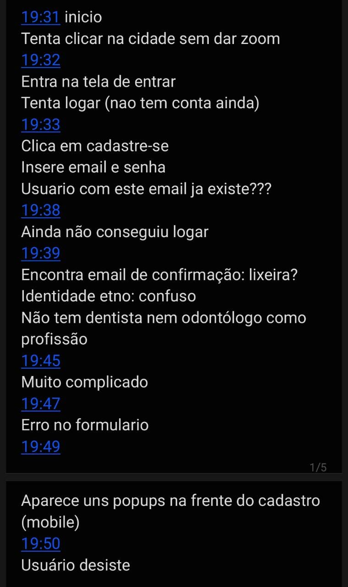
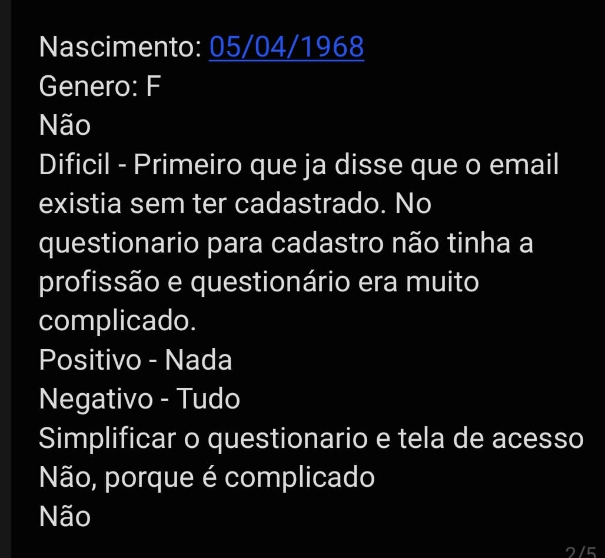

Cultura Educa Avaliação
Home
Extreme User Interview
Participante:
Patricia
Descrição:
Familiaridade com computadores básica. Sabe utilizar para algumas tarefas comuns do dia-a-dia, mas costuma usar mais o celular.
Data de nascimento:
05/04/1968
Gênero:
Mulher cis
Você conhecia o site Cultura Educa?
Não
Você achou/acha fácil de usar?
Achou difícil, pois primeiramente disse que o email já existia sem que antes tivesse cadastrado, não tinha a profissão da pessoa, e o questionário de cadastro era muito complicado e extenso para uma ferramenta que deveria facilitar.
O que você achou de positivo nele?
A ideia
O que você achou de negativo nele?
Toda a usabilidade
Que melhorias você gostaria que houvesse?
Simplificar o questionário e tela de acesso
Você recomendaria o site? Por que?
Não, por ser complicado
Você pretende começar/continuar a usar?
Não
Fly on the Wall
Observação
Acessou o site pelo computador. Com o objetivo de criar um evento, tentou clicar em uma cidade sem usar o zoom. Não conseguiu, então foi para a tela de Entrar. Lá tentou fazer login (sem ter uma conta), ao receber a notificação de não possuir conta, começou o cadastro. Após registrar um email e uma senha válidos, recebeu uma notificação de que já existia uma conta registrada na aplicação, mesmo que não houvesse de fato. Então tentou registrar com um email inválido, e conseguiu. Ao tentar fazer o login não conseguiu, pois o email é inválido. Então percebeu uma vibração no celular, foi que viu que recebeu uma notificação de confirmação de conta para o email válido na caixa de Lixeira. Prosseguiu então com o celular, onde encontrou dificuldades em muitos dos campos a serem preenchidos, pela quantidade e informações das que não tinha conhecimento, que mesmo clicando no botão de interrogação não eram explicados. Tentou colocar sua profissão, mas não a encontrou, então prosseguiu com o cadastro sem preencher aquele campo. Alguns componentes começaram a se sobrepor, dificultando a visibilidade dos campos, que foram ignorados pelo usuário. Após 15 minutos tentando se cadastrar sem sucesso, o usuário desiste.

